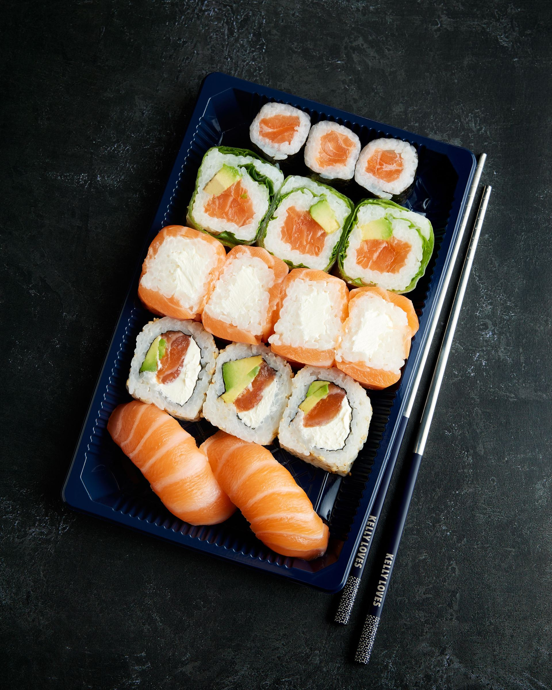
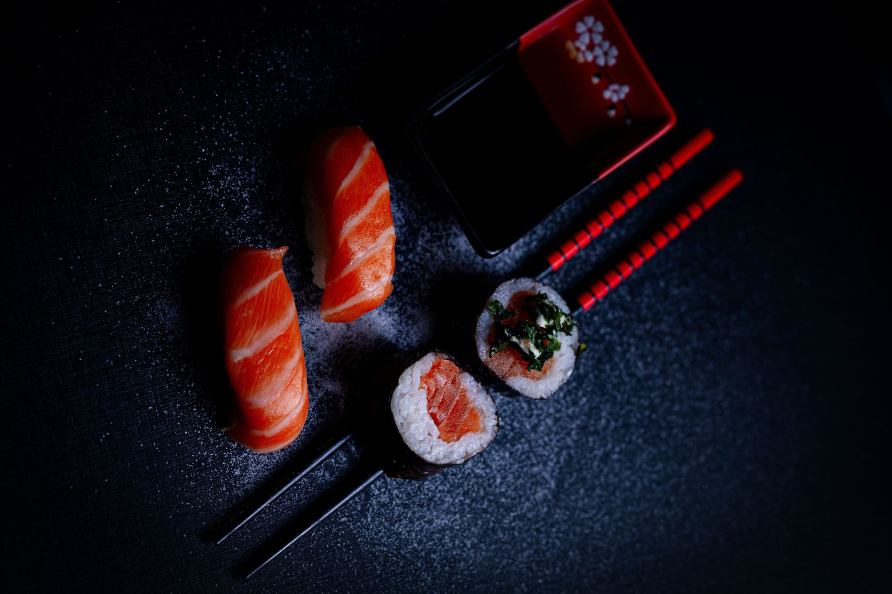
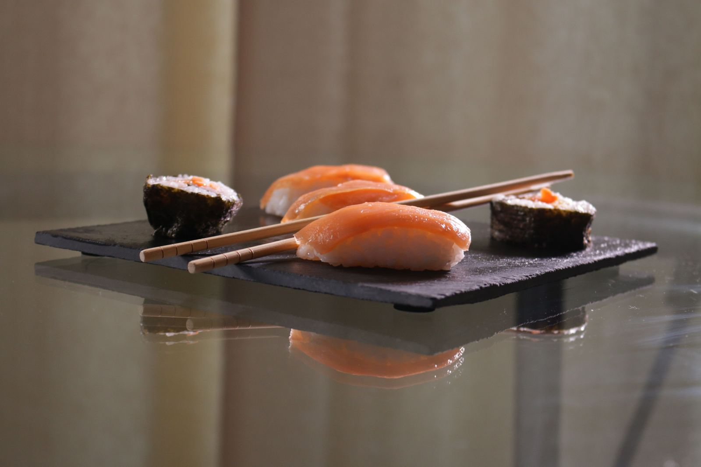

Sushi & take away · Södermalm
Sushi Isaki
Vår specialitet
Färsk sushi
Handrullad sushi, sashimi och varma rätter på Ringvägen 79. Ät hos oss, ta med eller få det levererat – omsorgsfullt packat.
4,7 av 5 · 1 500+ betyg på Uber Eats



Välkommen
Kvarterets sushibar på Ringvägen
Sushi Isaki är en liten, familjär sushibar på Södermalm. Här rullas sushin för hand och maten packas med omsorg, så att den håller sig fin hela vägen hem.
Sushi & sashimiKlassiker och egna kombinationer
BowlsMättande och fräscha
Varma rätterWok, bibimbap och yakiniku
LeveransVia foodora och Uber Eats
Gästernas betyg
4,7
Baserat på över 1 500 betyg på Uber Eats. Tack till alla som beställer från oss!
Besök oss
Öppettider & hitta hit
Öppettider
| Måndag – fredag | 11:00 – 20:30 |
| Lördag – söndag | 12:00 – 20:30 |
Kontakt
Ringvägen 79, 118 61 Stockholm
Södermalm
08-642 27 95